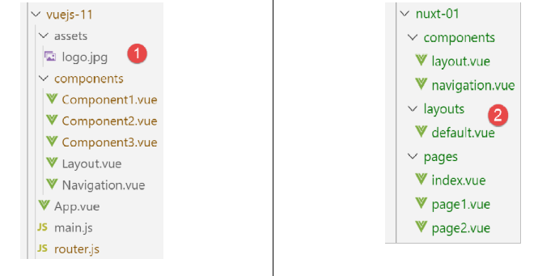
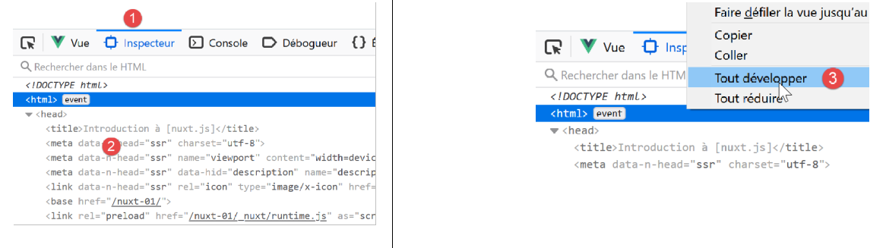
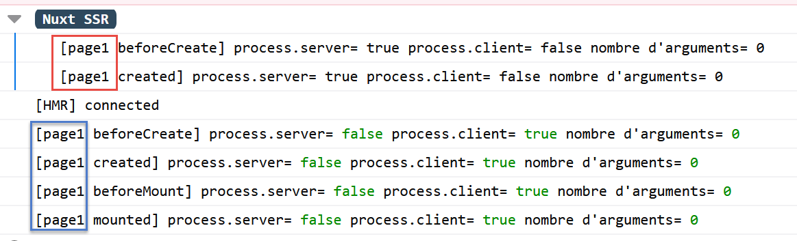

4. Exemple [nuxt-01] : routage et navigation
Nous allons construire une série d’exemples simples pour découvrir progressivement le fonctionnement d’une application [nuxt]. Nous allons commencer par porter l’application [vuejs-11] du document |Introduction au framework VUE.JS par l’exemple|, pour découvrir tout d’abord ce qui différencie l’organisation du code d’une application [nuxt] de celle du code d’une application [vue].
4.1. Arborescence du projet
Le projet [vuejs-11] était un projet de navigation entre vues :

L’arborescence du code source du projet [vuejs-11] était le suivant :

- [main.js] était le script exécuté lors du démarrage de l’application [vue] ;
- [router.js] fixait les règles de routage ;
- [App.vue] était la vue structurante de l’application. Elle organisait la mise en page des différentes vues ;
- [Component1, Component2, Component3, Layout, Navigation] étaient les composants utilisés dans les différentes vues de l’application ;
Dans le portage de l’application [vue] [1] vers une application [nuxt] [2] :
- les scripts exécutés au démarrage de l’application doivent être déclarés dans la clé [plugins] du fichier [nuxt.config.js]. Par ailleurs, il est possible de séparer les scripts destinés au serveur [nuxt] de ceux destinés au client [nuxt] ;
- la vue [App.vue] doit être installée dans le dossier [layouts] et être renommée [default.vue] ;
- les composants [Component1, Component2, Component3] qui sont les cibles du routage doivent migrer dans le dossier [pages]. L’un d’eux, celui qui sert de page d’accueil, doit être renommé [index.vue]. Nous avons ici renommé les fichiers :
- [Component1] --> [index] : affiche le texte [Home] ;
- [Component2] --> [page1] : affiche le texte [Page 1] ;
- [Component3] --> [page2] : affiche le texte [Page 2] ;
[nuxt] utilise le contenu du dossier [pages] pour générer dynamiquement les routes suivantes :
Du coup, le fichier [router.js] utilisé dans le projet [vue] devient inutile dans le projet [nuxt].
Le fichier de configuration [nuxt.config.js] sera le suivant :
export default {
mode: 'universal',
/*
** Headers of the page
*/
head: {
title: 'Introduction à [nuxt.js]',
meta: [
{ charset: 'utf-8' },
{ name: 'viewport', content: 'width=device-width, initial-scale=1' },
{
hid: 'description',
name: 'description',
content: 'ssr routing loading asyncdata middleware plugins store'
}
],
link: [{ rel: 'icon', type: 'image/x-icon', href: '/favicon.ico' }]
},
/*
** Customize the progress-bar color
*/
loading: { color: '#fff' },
/*
** Global CSS
*/
css: [],
/*
** Plugins to load before mounting the App
*/
plugins: [],
/*
** Nuxt.js dev-modules
*/
buildModules: [
// Doc: https://github.com/nuxt-community/eslint-module
'@nuxtjs/eslint-module'
],
/*
** Nuxt.js modules
*/
modules: [
// Doc: https://bootstrap-vue.js.org
'bootstrap-vue/nuxt',
// Doc: https://axios.nuxtjs.org/usage
'@nuxtjs/axios'
],
/*
** Axios module configuration
** See https://axios.nuxtjs.org/options
*/
axios: {},
/*
** Build configuration
*/
build: {
/*
** You can extend webpack config here
*/
extend(config, ctx) {}
},
// répertoire du code source
srcDir: 'nuxt-01',
// routeur
router: {
// racine des URL de l'application
base: '/nuxt-01/'
},
// serveur
server: {
// port de service, 3000 par défaut
port: 81,
// adresses réseau écoutées, par défaut localhost : 127.0.0.1
// 0.0.0.0 = toutes les adresses réseau de la machine
host: '0.0.0.0'
}
}
- ligne 62 : on indique le dossier qui contient le code source du projet [dvp] ;
- ligne 66 : : on indique l’URL racine de l’application [dvp] (on peut mettre ce qu’on veut) ;
- ligne 43 : notons que la bibliothèque [bootstrap-vue] est référencée dans la configuration ;
4.2. Portage du fichier [main.js]
Le fichier [main.js] du projet [vuejs-11] était le suivant :
// imports
import Vue from 'vue'
import App from './App.vue'
// plugins
import BootstrapVue from 'bootstrap-vue'
Vue.use(BootstrapVue);
// bootstrap
import 'bootstrap/dist/css/bootstrap.css'
import 'bootstrap-vue/dist/bootstrap-vue.css'
// routeur
import monRouteur from './router'
// configuration
Vue.config.productionTip = false
// instanciation projet [App]
new Vue({
name: "app",
// vue principale
render: h => h(App),
// routeur
router: monRouteur,
}).$mount('#app')
En-dehors des [imports], le code fait les choses suivantes :
- lignes 5-11 : utilisation de la bibliothèque [bootstrap-vue]. Ce travail est désormais fait par le module [bootstrap-vue/nuxt] de la ligne 43 du fichier de configuration [nuxt.config.js] ;
- lignes 14 et 25 : utilisation du fichier de routage [router.js]. Ce travail est désormais fait automatiquement par l’application [nuxt] à partir de l’arborescence du dossier [pages] ;
- lignes 20-26 : instanciation de la vue principale de l’application. Dans une application [nuxt], c’est la vue [layouts/default.vue] qui sert de vue principale ;
Le fichier [main.js] n’a désormais plus de raison d’être. S’il en avait eu une, on l’aurait déclaré dans la clé [plugins] de la ligne 30 du fichier de configuration [nuxt.config.js] ;
4.3. La vue principale [default.vue]

La vue principale [layouts / default.vue] est la suivante :
<template>
<div class="container">
<b-card>
<!-- un message -->
<b-alert show variant="success" align="center">
<h4>[nuxt-01] : routage et navigation</h4>
</b-alert>
<!-- la vue courante du routage -->
<nuxt />
</b-card>
</div>
</template>
<script>
export default {
name: 'App'
}
</script>
- ligne 9, dans le projet [vuejs-11], on avait la balise <router-view /> au lieu de la balise <nuxt /> utilisée ici. Les deux semblent utilisables. Je les ai essayées toutes les deux sans voir de changement. J’ai gardé la balise <nuxt /> qui est celle conseillée. Elle affiche la vue courante, ç-à-d la page cible du routage courant ;
4.4. Les composants

Par rapport au projet [vuejs-11], les composants [layout, navigation] ne changent pas :
[components / layout.vue]
<!-- disposition des vues -->
<template>
<!-- ligne -->
<div>
<b-row>
<!-- zone à deux colonnes -->
<b-col v-if="left" cols="2">
<slot name="left" />
</b-col>
<!-- zone à dix colonnes -->
<b-col v-if="right" cols="10">
<slot name="right" />
</b-col>
</b-row>
</div>
</template>
<script>
export default {
// paramètres
props: {
left: {
type: Boolean
},
right: {
type: Boolean
}
}
}
</script>
Ce composant sert à structurer les pages de l’application en deux colonnes :
- lignes 7-9 : la colonne de gauche sur 2 colonnes Bootstrap ;
- lignes 11-13 : la colonne de droite sur 10 colonnes Bootstrap ;
[navigation.vue]
<template>
<!-- menu Bootstrap à trois options -->
<b-nav vertical>
<b-nav-item to="/" exact exact-active-class="active">
Home
</b-nav-item>
<b-nav-item to="/page1" exact exact-active-class="active">
Page 1
</b-nav-item>
<b-nav-item to="/page2" exact exact-active-class="active">
Page 2
</b-nav-item>
</b-nav>
</template>
Ce composant affiche trois liens de navigation :

Pour savoir quoi mettre comme valeur aux attributs [to] des lignes 4, 7 et 10, il faut regarder le dossier [pages] [2] :
- la page [index] aura l’URL [/] ;
- la page [page1] aura l’URL [/page1] ;
- la page [page2] aura l’URL [/page2] ;
Le composant [navigation] peut être également écrit de la façon suivante :
<template>
<!-- menu Bootstrap à trois options -->
<b-nav vertical>
<nuxt-link to="/" exact exact-active-class="active">
Home
</nuxt-link>
<nuxt-link to="/page1" exact exact-active-class="active">
Page 1
</nuxt-link>
<nuxt-link to="/page2" exact exact-active-class="active">
Page 2
</nuxt-link>
</b-nav>
</template>
La balise <b-nav-item> est remplacée par la balise <nuxt-link> qui désigne un lien de routage. A l’exécution, je n’ai pas vu de grande différence, rien qui pourrait faire pencher la balance vers une balise plutôt que l’autre.
4.5. Les pages

La page [index.vue] affiche la vue suivante :

Le code de la page est le suivant :
<!-- page principale -->
<template>
<Layout :left="true" :right="true">
<!-- navigation -->
<Navigation slot="left" />
<!-- message-->
<b-alert slot="right" show variant="warning">
Home
</b-alert>
</Layout>
</template>
<script>
/* eslint-disable no-undef */
/* eslint-disable no-console */
/* eslint-disable nuxt/no-env-in-hooks */
import Navigation from '@/components/navigation'
import Layout from '@/components/layout'
export default {
name: 'Home',
// composants utilisés
components: {
Layout,
Navigation
},
// cycle de vie
beforeCreate(...args) {
console.log('[home beforeCreate]', 'process.server=', process.server,
'process.client=', process.client, "nombre d'arguments=", args.length)
},
created(...args) {
console.log('[home created]', 'process.server=', process.server,
'process.client=', process.client, "nombre d'arguments=", args.length)
},
beforeMount(...args) {
console.log('[home beforeMount]', 'process.server=', process.server,
'process.client=', process.client, "nombre d'arguments=", args.length)
},
mounted(...args) {
console.log('[home mounted]', 'process.server=', process.server,
'process.client=', process.client, "nombre d'arguments=", args.length)
}
}
</script>
- ligne 5 : le composant de navigation est placé en colonne de gauche ;
- lignes 7-9 : une alerte est placée dans la colonne de droite ;
Dans la partie <script>, nous mettons du code dans les fonctions du cycle de vie de la page [beforeCreate, created, beforeMount, beforeMounted]. Nous voulons savoir lesquelles sont exécutées par le serveur []nuxt et lesquelles par le client [nuxt]. On rappelle deux choses :
- lorsqu’une page est demandée soit au démarrage de l’application, cas de la page [index], soit manuellement par l’utilisateur qui rafraîchit la page du navigateur ou tape une URL à la main, elle est délivrée d’abord par le serveur [nuxt]. Celui-ci interprète le code ci-dessus et exécute le Javascript qu’il contient ;
- lorsque la page envoyée par le serveur [nuxt] arrive sur le navigateur, elle arrive avec le code du client [nuxt]. Celui-ci interprète de nouveau la page ci-dessus ;
- par des logs, on veut savoir qui fait quoi pour mieux comprendre ce processus ;
- lignes 30-31 : on utilise dans la fonction un objet global [process] qui existe aussi bien sur le serveur que sur le client :
- [process.server] est vrai si le code est exécuté par le serveur, faux sinon ;
- [process.client] est vrai si le code est exécuté par le client, faux sinon ;
- parce que la variable [process] est non déclarée dans le code, on est obligés de mettre la ligne 14 pour [eslint]. La ligne [16] est nécessaire parce que sinon [eslint] déclare un autre type d’erreur à cause de la variable [process]. La ligne 15 est elle nécessaire pour permettre l’utilisation de [console] dans les fonctions du cycle de vie ;
- ligne 29 : on veut savoir également si les fonctions du cycle de vie reçoivent des arguments. On va découvrir en effet que [nuxt] transmet des informations à certaines fonctions. On veut savoir si les fonctions du cycle de vie en font partie ;
- on répète le même code pour les quatre fonctions ;
4.6. Le fichier [nuxt.config.js]
C’est lui qui contrôle l’exécution du projet [dvp]. Il a été décrit page 33.
4.7. Exécution du projet
Nous exécutons le projet :

La page affichée est la suivante :

Une fois installée sur le navigateur, l’application [nuxt] devient une application [vue] classique. Nous ne commenterons donc pas le fonctionnement client de l’application [nuxt-01]. Cela a été fait dans le projet [vuejs-11] du document |Introduction au framework VUE.JS par l’exemple|.
L’application [nuxt] ne diffère de l’application [vue] qu’à deux moments :
- le démarrage initial de l’application qui fournit la page d’accueil ;
- à chaque fois que l’utilisateur provoque d’une manière ou une autre le rafraîchissement du navigateur ;
Dans ces deux cas :
- la page demandée est fournie par le serveur ;
- la page reçue est traitée par le client ;
Regardons les logs du démarrage de l’application (F12 sur le navigateur) :

- en [1], les logs du serveur (process.server=true). Ils apparaissent précédés de la mention [Nuxt SSR] (SSR= Server Side Rendered) ;
- en [2], les logs du client sur le navigateur (process.client=true) ;
De ces logs, on peut déduire que :
- le serveur exécute les fonctions [beforeCreate, created] du cycle de vie ;
- le client exécute les fonctions [beforeCreate, created, beforeMount, mounted] du cycle de vie ;
- le serveur a traité la page avant le client ;
- dans les deux cas, aucune des fonctions exécutées ne reçoit d’arguments ;
Maintenant regardons le code source de la page reçue (option [Code source de la page] dans le navigateur) :
<!doctype html>
<html data-n-head-ssr>
<head>
<title>Introduction à [nuxt.js]</title>
<meta data-n-head="ssr" charset="utf-8">
<meta data-n-head="ssr" name="viewport" content="width=device-width, initial-scale=1">
<meta data-n-head="ssr" data-hid="description" name="description" content="ssr routing loading asyncdata middleware plugins store">
<link data-n-head="ssr" rel="icon" type="image/x-icon" href="/favicon.ico">
<base href="/nuxt-01/">
....
<link rel="preload" href="/nuxt-01/_nuxt/runtime.js" as="script">
<link rel="preload" href="/nuxt-01/_nuxt/commons.app.js" as="script">
<link rel="preload" href="/nuxt-01/_nuxt/vendors.app.js" as="script">
<link rel="preload" href="/nuxt-01/_nuxt/app.js" as="script">
</head>
<body>
<div data-server-rendered="true" id="__nuxt">
<div id="__layout">
<div class="container">
<div class="card">
<div class="card-body">
<div role="alert" aria-live="polite" aria-atomic="true" align="center" class="alert alert-success">
<h4>[nuxt-01] : routage et navigation</h4>
</div>
<div>
<div class="row">
<div class="col-2">
<ul class="nav flex-column">
<li class="nav-item">
<a href="/nuxt-01/" target="_self" class="nav-link active nuxt-link-active">
Home
</a>
</li>
<li class="nav-item">
<a href="/nuxt-01/page1" target="_self" class="nav-link">
Page 1
</a>
</li>
<li class="nav-item">
<a href="/nuxt-01/page2" target="_self" class="nav-link">
Page 2
</a>
</li>
</ul>
</div> <div class="col-10">
<div role="alert" aria-live="polite" aria-atomic="true" class="alert alert-warning">
Home
</div>
</div>
</div>
</div>
</div>
</div>
</div>
</div>
</div>
<script>
window.__NUXT__ = (function (a, b, c, d, e, f, g, h, i, j) {
return {
layout: "default", data: [{}], error: null, serverRendered: true,
logs: [
{ date: new Date(1574069600078), args: [a, b, c, d, e, f, g, "(repeated 1 times)"], type: h, level: i, tag: j },
{ date: new Date(1574070938091), args: [a, b, c, d, e, f, g], type: h, level: i, tag: j }
]
}
}("[home beforeCreate]", "process.server=", "true", "process.client=", "false", "nombre d'arguments=", "0", "log", 2, ""));
</script>
<script src="/nuxt-01/_nuxt/runtime.js" defer></script>
<script src="/nuxt-01/_nuxt/commons.app.js" defer></script>
<script src="/nuxt-01/_nuxt/vendors.app.js" defer></script>
<script src="/nuxt-01/_nuxt/app.js" defer></script>
</body>
</html>
Commentaires
- la première chose qui peut être remarquée est que le code HTML reçu reflète correctement ce que voit l’utilisateur. Ce n’était pas le cas des applications [vue] pour lesquelles le code source affiché était le code source d’un fichier HTML quasi vide. C’était ce qu’avait reçu le navigateur. Ensuite le client [vue] prenait la main et construisait la page attendue par l’utilisateur. Il fallait alors aller dans l’onglet [inspecteur] des outils de développement du navigateur (F12) pour découvrir le code HTML de la page affichée ;
- lignes 57-67 : c’est le script qui a affiché les logs tagués [Nuxt SSR]. Ces logs ont été produits côté serveur et les résultats ont été embarqués dans un script inclus dans la page envoyée ;
- lignes 68-71 : les scripts qui forment le client exécuté côté navigateur ;
Les scripts des lignes 68-71 sont exécutés et transforment la page reçue. Pour connaître la page finalement affichée pour l’utilisateur, il faut aller dans l’onglet [inspecteur] des outils de développement du navigateur (F12) :

Lorsqu’on développe la balise <html> [3], on a le contenu suivant :
<head>
<title>Introduction à [nuxt.js]</title>
<meta data-n-head="ssr" charset="utf-8">
<meta data-n-head="ssr" name="viewport" content="width=device-width, initial-scale=1">
<meta data-n-head="ssr" data-hid="description" name="description" content="ssr routing loading asyncdata middleware plugins store">
<link data-n-head="ssr" rel="icon" type="image/x-icon" href="/favicon.ico">
<base href="/nuxt-01/">
...
<link rel="preload" href="/nuxt-01/_nuxt/runtime.js" as="script">
<link rel="preload" href="/nuxt-01/_nuxt/commons.app.js" as="script">
<link rel="preload" href="/nuxt-01/_nuxt/vendors.app.js" as="script">
<link rel="preload" href="/nuxt-01/_nuxt/app.js" as="script">
<script charset="utf-8" src="/nuxt-01/_nuxt/pages_index.js"></script>
<script charset="utf-8" src="/nuxt-01/_nuxt/pages_page1.js"></script>
<script charset="utf-8" src="/nuxt-01/_nuxt/pages_page2.js"></script>
</head>
<body>
<div id="__nuxt">
<div id="__layout">
<div class="container">
<div class="card">
<div class="card-body">
<div role="alert" aria-live="polite" aria-atomic="true" class="alert alert-success" align="center">
<h4>[nuxt-01] : routage et navigation</h4>
</div>
<div>
<div class="row">
<div class="col-2">
<ul class="nav flex-column">
<li class="nav-item">
<a href="/nuxt-01/" target="_self" class="nav-link active nuxt-link-active">
Home
</a>
</li>
<li class="nav-item">
<a href="/nuxt-01/page1" target="_self" class="nav-link">
Page 1
</a>
</li>
<li class="nav-item">
<a href="/nuxt-01/page2" target="_self" class="nav-link">
Page 2
</a>
</li>
</ul>
</div>
<div class="col-10">
<div role="alert" aria-live="polite" aria-atomic="true" class="alert alert-warning">
Home
</div>
</div>
</div>
</div>
</div>
</div>
</div>
</div>
</div>
<script>
window.__NUXT__ = (function (a, b, c, d, e, f, g, h, i) {
return {
layout: "default", data: [{}], error: null, serverRendered: true,
logs: [
{ date: new Date(1574068674481), args: ["[home beforeCreate]", a, b, c, d, e, f], type: g, level: h, tag: i },
{ date: new Date(1574068674482), args: ["[home created]", a, b, c, d, e, f], type: g, level: h, tag: i }
]
}
}("process.server=", "true", "process.client=", "false", "nombre d'arguments=", "0", "log", 2, ""));
</script>
<script src="/nuxt-01/_nuxt/runtime.js" defer=""></script>
<script src="/nuxt-01/_nuxt/commons.app.js" defer=""></script>
<script src="/nuxt-01/_nuxt/vendors.app.js" defer=""></script>
<script src="/nuxt-01/_nuxt/app.js" defer=""></script>
<iframe id="mc-sidebar-container" ...></iframe>
<iframe id="mc-topbar-container"...> </iframe>
<iframe id="mc-toast-container" ...></iframe>
<iframe id="mc-download-overlay-container"...></iframe>
</body>
Commentaires
- à première vue, la page affichée lignes 19-59, semble être la même que la page reçue ;
- lignes 14-16 : trois nouveaux scripts apparaissent, un pour chacune des pages de l’application ;
- lignes 76-79 : quatre [iframe] apparaissent ;
Lignes 33, 37 et 42, les liens posent problème. Ils semblent être des liens normaux qui lorsqu’on les clique vont faire une requête vers le serveur. Or à l’exécution, on voit que ce n’est pas vrai : il n’y a pas de requête vers le serveur. Pour comprendre pourquoi, il faut retourner dans l’onglet [inspecteur] du navigateur :

On voit qu’en [1, 2] des événements ont été attachés aux liens. Ce sont les scripts des lignes 71-74 qui ont attaché des gestionnaires d’événements aux liens. Donc :
- la page affichée par le client est visuellement identique à celle envoyée par le serveur ;
- un comportement dynamique a été ajouté à la page par le client ;
Maintenant demandons la page [page1] en tapant l’URL à la main [http://192.168.1.128:81/nuxt-01/page1]. Les logs deviennent les suivants :

On obtient les mêmes résultats que pour la page [index] mais pour [page1]. Le code source de la page reçue est lui le suivant :
<body>
<div data-server-rendered="true" id="__nuxt">
<div id="__layout">
<div class="container">
<div class="card">
<div class="card-body">
<div role="alert" aria-live="polite" aria-atomic="true" align="center" class="alert alert-success"><h4>[nuxt-01] : routage et navigation</h4></div> <div>
<div class="row">
<div class="col-2">
<ul class="nav flex-column">
<li class="nav-item">
<a href="/nuxt-01/" target="_self" class="nav-link">
Home
</a>
</li>
<li class="nav-item">
<a href="/nuxt-01/page1" target="_self" class="nav-link active nuxt-link-active">
Page 1
</a>
</li>
<li class="nav-item">
<a href="/nuxt-01/page2" target="_self" class="nav-link">
Page 2
</a>
</li>
</ul>
</div> <div class="col-10">
<div role="alert" aria-live="polite" aria-atomic="true" class="alert alert-primary">
Page 1
</div>
</div>
</div>
</div>
</div>
</div>
</div>
</div>
</div>
<script>window.__NUXT__ = { layout: "default", data: [{}], error: null, serverRendered: true, logs: [{ date: new Date(1573917721122), args: ["[page1 beforeCreate]", "process.server=", "true", "process.client=", "false", "nombre d'arguments=", "0"], type: "log", level: 2, tag: "" }] };</script>
<script src="/nuxt-01/_nuxt/runtime.js" defer></script>
<script src="/nuxt-01/_nuxt/commons.app.js" defer></script>
<script src="/nuxt-01/_nuxt/vendors.app.js" defer></script>
<script src="/nuxt-01/_nuxt/app.js" defer></script>
</body>
On obtient le même type de page que la page [index] mais avec l’alerte de la vue [Page 1] (ligne 30). Lignes 41-44, le code du client a été renvoyé avec la page. Au final, demander une URL à la main est identique à redémarrer l’application. Simplement la page affichée n’est pas forcément la page d’accueil, c’est celle qui a été demandée. Une fois la page reçue, c’est le client qui prend la main. Le serveur ne sera plus sollicité à moins que l’utilisateur n’en décide autrement.